Un Atelier Chinois
Expérience de construction d'un cerf-volant chinois.
Le festival de Marines dure une semaine et est orienté Inde et Chine. Dans la semaine, peu de vols mais une exposition en salle, beaucoup d'ateliers pour les écoles et des démonstrations/ateliers de construction par des maîtres du bambou. Pour les oiseaux chinois en bambou et soie, surtout des aigles, le maître est Wang Zhushan. Il ne parle pas français, ce qui est classique, ni anglais, ce qui rend la communication assez délicate !
Mais, sur les ateliers, on se débrouille toujours, avec les mains et quelques mots : "ici, grôs, grôs, là, petit, petit, petit..." ( = il faut effiler le bout à partir des 2/5), "same, same" ( = les deux cotés bien pareils) et "OK, OK, OK" ( = pas terrible, mais ça ira comme ça) ou le fatidique et redouté "no OK" : le maître prend son cutter et pourfend le patient travail de la dernière heure, dissymétrique de 2 mm. Alors vous recommencez, mais cette fois, vous soignez bien le "same, same"...
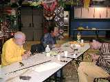
J'ai participé à cet atelier avec patience et opiniâtreté.
Pour commencer, on fend un gros bambou (de 6 à 10 cm de diamètre) pour obtenir des baguettes qui aient en gros la dimension désirée. Cela semble simple, mais si on ne vous explique pas, vous commencez avec 2 cm de large, et vous sortez en sifflet sur le coté avant la fin du bambou. En gros, il faut tourner le fendoir du sens opposé à celui que vous penseriez naturellement. Cette technique est importante car pour obtenir des formes symétriques, on met d'abord une baguette à la forme voulue, et ensuite seulement, on la fend en 2. On a ainsi 2 baguettes avec les mêmes courbures, mais aussi les mêmes épaisseurs et provenant du même endroit du même morceau de bambou, qui répondront donc de manière égale aux sollicitations. Si on rate le fendage, si une des deux moitiés est plus large que l'autre, eh bien il n'y a plus qu'à jeter et à recommencer... Heureusement, Wang Zhushan veille ou intervient dans cette phase délicate.
Donc, il faut courber les baguettes. Le bambou offre cette géniale particularité de pouvoir être fortement courbé quand il est chauffé à la bonne température, mais aussi de garder cette forme dès qu'il a refroidi. Le bois d'arbre classique ne peut être courbé, lui, que mouillé et chauffé un certain temps ("étuvé"), puis maintenu en forme jusqu'à séchage complet (quelques jours). Encore se décourbe-t-il lentement avec le temps et les variations d'humidité. Le bambou, lui, peut être travaillé en temps réel et garde indéfiniment ensuite la forme donnée. Pour cela, on le chauffe sur la flamme d'une lampe à alcool, ou au briquet voire à la cigarette pour les très petites sections (1).
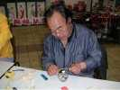
Pas trop près pour ne pas le roussir (voire le brûler, ce qui arrive vite avec de petites baguettes et de fortes courbures désirées), et "assez" longtemps pour qu'il se courbe. Cet "assez" dépend évidemment du diamètre. En fait, on détecte le bon degré en forçant un peu sur la pièce tout en chauffant. Quand elle atteint le point crucial, on la sent alors "céder", et c'est très net. Il faut évidemment avoir chauffé de façon homogène, sinon la partie froide casse et fait une écaille... Reste alors à choisir la bonne courbure, et à continuer un peu plus loin si besoin. En fait, il est plus facile de courber un peu trop et de "décourber" ensuite pendant le début du refroidissement, en comparant au modèle s'il y en a un, ou à votre idée si vous créez.
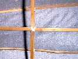
Une fois les premières baguettes courbées et refendues, il faut les assembler. On peut, et c'est le plus facile, ligaturer des baguettes qui se croisent. On encolle quand même les baguettes et la ligature.
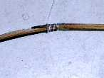
On peut aussi assembler en bout, par exemple pour fermer l'ovale du corps. On crée alors un biseau à chaque extrémité, on encolle et on ligature avec un fil de coton un peu empesé et raide, mais qu'on peut quand même casser à la main. La colle est une colle blanche de menuisier, qui sèche rapidement (5 à 10 minutes). Évidemment, il y a des petits "tours de main" à apprendre : par exemple, pour ligaturer un biseau, on donne d'abord des petits coups de lame à l'extérieur. Ainsi, la ligature ne glisse pas vers le bout du biseau à mesure que vous l'enroulez ! Pour les noeuds, on ne se complique pas la vie : tout est enduit de colle, il suffit de casser le fil près de la ligature et d'incorporer le bout dans la colle.
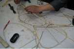
On forme séparément le corps et les ailes. Pour le corps, on part d'un ovale resserré à la base du cou. On ajoute ensuite le tour de queue, puis on courbe à la lampe la tête vers le bas, et la queue vers le haut, bien symétriquement. Deux arcs transversaux forment la poitrine, et l'on complète avec une dorsale allant jusqu'au bec et des baguettes qui étoffent le corps et augmentent le bec et la queue. Enfin divers renforts intérieurs assurent la rigidité et la solidité en cas de chute. Évidemment, chaque nouvelle baguette est courbée pour qu'elle s'ajuste parfaitement sans contrainte sur l'ébauche de corps déjà formée.
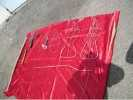
La photo ci-contre montre divers outils et stades de réalisation. En haut, de gauche à droite :
- le gros morceau de bambou initial, la serpe et le marteau pour le refendre ;
- la baguette encore "droite" mais déjà régularisée : courbures parasites supprimées à chaud, irrégularités et noeuds enlevés avec le rabot chinois à deux poignées qui touche la serpe. Il comporte une lame très coupante bricolée à partir d'un morceau de lame de scie à ruban d'environ 3 mm d'épaisseur, affûté à la pierre à huile. On le voit mieux sur la photo précédente ;
- la baguette non refendue qui a été courbée à la forme (1/2 corps) désirée ;
- la lampe à alcool et le "cutter" chinois à 2 tranchants (gare les doigts !) ;
- le corps "ovale" formé par la baguette refendue en 2 morceaux assemblés en bout, et comportant déjà quelques renforts transversaux qui "bloquent" la forme ;
- le corps avec son "tour de queue", la tête et la queue recourbées, la baguette dorsale avec le bec, et les 2 arcs transversaux de la poitrine ;
- le corps à peu près terminé avec 3 baguettes ventrales s'appuyant sur les arcs et se recourbant pour participer au bec.
Au bas de la planche, les 3 premiers morceaux, non assemblés, de l'aile. Il manque une volte qui formera à gauche le bout de l'aile et qu'on distingue sur la photo de l'aigle achevé.
Les 2 photos ci-dessus montrent le détail du corps à 2 stades d'achèvement. C'est un moment émouvant quand on commence à "lire" la forme de l'animal. Cela représente quand même, chacun faisant son aigle, 2 jours du travail des stagiaires pourtant bien aidés par Wang Zhushan.
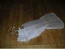
Le corps formé, il faut l'entoiler. On utilise de la soie très fine. Elle est rincée pour enlever l'apprêt et séchée pour la libérer des contraintes éventuelles. Ensuite on découpe approximativement le morceau voulu : grand pour les parties à peu près planes, mais petit pour les parties courbées et vrillées. La soie est alors humidifiée dans un chiffon mouillé, et on encolle toutes les parties des baguettes qui la supporteront. On pose alors le tissu mouillé, et on le tend du mieux possible sur les baguettes. En séchant, il se tendra encore, mais dans une mesure limitée : il ne faut pas compter aveuglément sur ce rattrapage et laisser des plis.
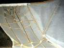
Les ailes seront assemblées (mais démontables) sur le corps en glissant le longeron dans un tube de papier encollé et enroulé, fixé sur la baguette transversale au niveau des épaules et ligaturé sur une bonne longueur pour mieux résister (voir photo). La réalisation de ce tube est assez délicate : il faut un mandrin bien lisse du diamètre voulu, une personne qui encolle le papier à mesure, et une qui enroule progressivement sur le mandrin sans laisser de jeu au départ et sans faire de plis qui fragiliseraient le tube. Ensuite, il faut sortir ce dernier du mandrin sans l'abîmer, et le laisser sécher en forme, à sec si on s'y est pris à temps (le milieu reste longtemps humide) sinon sur la lampe... avec prudence.
L'arrière de l'aile est aussi pris dans 2 petites anses fixées à la naissance de la queue et qui constituent un travail d'orfèvre de la lampe à alcool. L'aile ainsi tenue ne pourra pas varier en incidence par rapport au corps.
Chaque aile est articulée en son milieu pour être pliée et tenir moins de place. Il faut réaliser une charnière en coupant le bambou, en l'amincissant un peu sur les parties qui vont se recouvrir et en créant l'axe avec un petit clou. Deux viroles, réalisées en boite à conserve découpée, roulée autour de la section et ligaturée, coulissent sur chaque demi-longeron pour bloquer le tout en vol.
Chaque aile est assemblée puis entoilée comme le corps, mais d'une seule pièce.
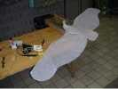
Enfin, l'aigle est fini. Pas peint, me direz-vous ? La peinture, ce sera pour plus tard : si on peut avec du soin et de la patience construire des structures avec les techniques apprises, la peinture nécessite un coté artistique et des coups de main difficiles à enseigner, surtout rapidement, et on ne peut pas risquer de gâcher le travail laborieusement accompli. Mais en blanc, l'aigle a sa beauté délicate, et je laisserai le mien comme ça.
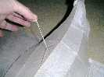
Tout est assemblé et entoilé. Enfin, entoilé... : pour les ailes, on "entoile" d'abord en papier spécial "Oufampo" : on ne va pas gaspiller la soie si le cerf-volant est raté. Une bride chinoise monopoint, et c'est Le Premier Lancement...
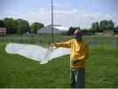
Le vol d'un aigle de Wang Zhushan est assez particulier : il cabre bien tant qu'il est en pression, comme un cerf-volant normal. Mais dès qu'on relâche, il se met à plat grâce à la bride monopoint et éventuellement commence à spiraler, ce qui entraîne l'enthousiasme général. Un peu déroutant pour nous, d'autant que le réglage de l'équilibre est assez délicat à trouver et que, par vent faible, on n'arrive pas à monter, voire à contrôler, l'aigle se remettant constamment à plat ! Travail à poursuivre sur le mien (le papier n'a pas été assez tendu)... et prise en main à perfectionner. Au total, une expérience enrichissante par les connaissances et les trucs acquis, par le fait qu'on en sort avec un cerf-volant réalisé, ainsi que par le contact humain intense au sein de l'atelier à travers les échanges, l'observation constante et le dialogue même quasi-muet avec le "Professeur".
Donc, à l'année prochaine à Marines Bad. Maxime
Note :
J'ai découvert après coup qu'on peut courber les petites baguettes avec un pistolet à souder : On passe la panne sur les parties à chauffer, et on sent quand la baguette se prête.
Avantages :
a) on ne risque pratiquement pas de griller la baguette, en tous cas moins qu'à la flamme !
b) on peut chauffer de façon très locale pour ajuster par exemple la courbure d'une volute comme ici le bec, sans décourber à coté ou vriller.
c) on peut modifier une courbure alors qu'on a déjà entoilé le CV, même en papier ! Si les possibilités a et b pouvaient déjà être obtenues grâce au tour de main d'un maître, ce dernier avantage est un plus certain et permet des rattrapages après essais.